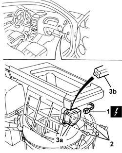

5040D52 AIR INLET AND RECIRCULATION FLAP ACTUATOR - R R
- Path
- Procedures > 50 AUXILIARY UNITS > 5040 AIR CONDITIONING CASING AND COMPONENTS > 5040D AIR CONDITIONER CONTROLS > 5040D52 AIR INLET AND RECIRCULATION FLAP ACTUATOR - R R
- Kind
- repair procedure (removal / refitting; the operation number is the code)
- Applies to
- engines: 2.0 JTS, 3.2 V6, 1.9 JTD 16V; all production periods
- Interactive page
- https://sloeber94.github.io/elrnDB-aGt/en/#/125001549
Applies to: engines: 2.0 JTS, 3.2 V6, 1.9 JTD 16V; all production periods
 Removing
Removing
 Refitting
RefittingOp. 7040A31 FLAP ASSEMBLY - R R
Op. 7040A09 PASSENGER AIR BAG COMPARTMENT COVER - R R
1. Disconnect the motor electrical connection
Name | Connector | |
|---|---|---|
1 | Air intake actuator | See N82 OUTSIDE / RECIRCULATION AIR INTAKE FLAP ACTUATOR |
2. Undo the bolts fixing the motor
3. Remove the motor (3a) releasing the intake (3b).

Applies to: engines: 2.0 JTS, 3.2 V6, 1.9 JTD 16V; all production periods
Refitting
RemovingCheck that the motor is undamaged.
Position the motor engaging the intake in the compulsory position.
Tighten the bolts fixing the motor.
Connect the motor electrical connection.